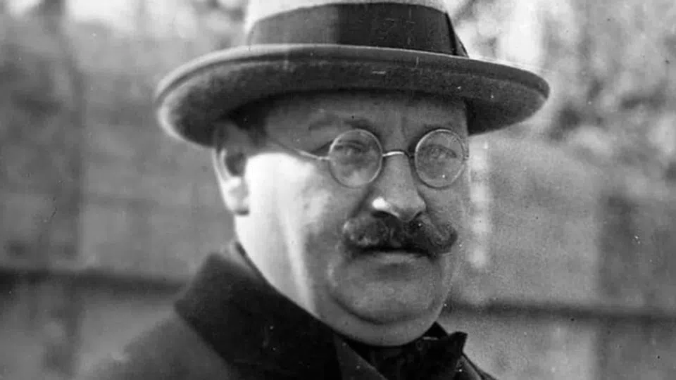
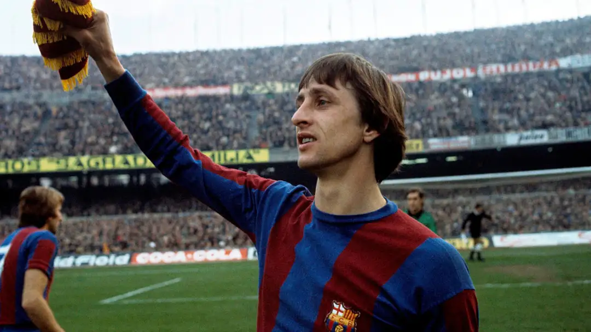

Die Geschichte des FC Barcelona

Bild: Joan Gamper, Gruender (Quelle: Wikimedia Commons, gemeinfrei)
Die Gruendung (1899)
Am 29. November 1899 wurde der FC Barcelona vom Schweizer Joan Gamper gegruendet. Gamper hatte zuvor in einer Lokalzeitung eine Annonce geschaltet und so elf Mitstreiter gefunden. Die ersten Treffen fanden in einem kleinen Lokal in der Innenstadt von Barcelona statt. Die blau-roten Vereinsfarben wurden bereits im Gruendungsjahr festgelegt und sind seither unveraendert geblieben.
Die fruehen Jahre (1900-1950)
In den ersten Jahrzehnten entwickelte sich der Verein langsam zu einer festen Groesse im spanischen Fussball. Im Jahr 1929 gewann Barca die allererste Austragung der La Liga. Waehrend der Diktatur von Francisco Franco wurde der Klub zu einem Symbol des katalanischen Widerstands. Trotz politischer Repressalien blieb Barca seiner Identitaet treu und gewann mehrere Pokaltitel.
Das Camp Nou und die Kubala-Aera (1957)
1957 wurde das Camp Nou eroeffnet, weil das alte Stadion Les Corts fuer den ungarischen Superstar Laszlo Kubala zu klein geworden war. Das Stadion wurde ueber Jahrzehnte stetig erweitert und ist bis heute das groesste Stadion Europas. In dieser Zeit wuchs auch die Mitgliederzahl rasant an.
Cruyff und der totale Fussball (1973-1996)

Bild: Johan Cruyff (Quelle: Wikimedia Commons, CC BY-SA 3.0)
1973 kam Johan Cruyff aus Amsterdam nach Barcelona und revolutionierte den Klub. Als Spieler gewann er auf Anhieb die Meisterschaft. Spaeter kehrte er als Trainer zurueck und formte das legendaere Dream Team, das 1992 erstmals den Europapokal der Landesmeister gewann. Cruyff legte den Grundstein fuer die Spielphilosophie, die den Klub bis heute praegt.
Die Guardiola-Aera und Tiki-Taka (2008-2012)
Pep Guardiola uebernahm 2008 das Traineramt und formte mit Lionel Messi, Xavi und Iniesta eines der besten Mannschaften der Fussballgeschichte. 2009 gelang das historische Sextuple - sechs Titel in einem einzigen Jahr. Der Spielstil mit kurzen Paessen und hohem Ballbesitz wurde unter dem Namen Tiki-Taka weltberuehmt. Diese Aera gilt fuer viele Experten als die erfolgreichste der Klubgeschichte.
Nach Messi (2021 bis heute)
2021 verliess Lionel Messi nach 21 Jahren den Verein in Richtung Paris. Der Klub steckte in einer schweren finanziellen Krise und musste sich neu aufstellen. Junge Talente aus der eigenen Nachwuchsschule La Masia wie Pedri, Gavi und Lamine Yamal traten ins Rampenlicht. Unter Trainer Hansi Flick gelang in der Saison 2024/25 wieder der Gewinn der Meisterschaft.